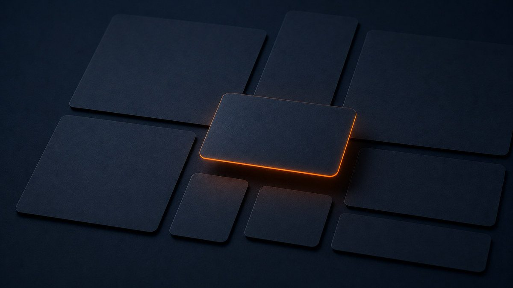
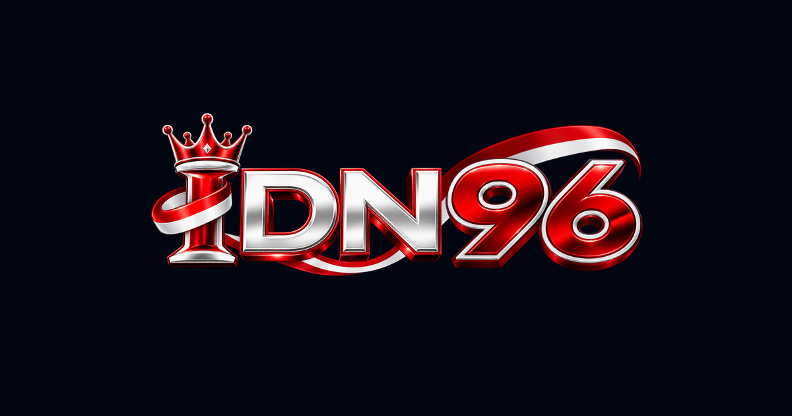

Media kit IDN96
Berkas merek yang boleh dipakai media, mitra, dan penulis yang memberitakan IDN96 — beserta batasnya.

Berkas logo
Delapan varian di bawah adalah berkas yang sama dengan yang dipakai situs kami sendiri, jadi tidak ada versi lama yang beredar berbeda. Semuanya PNG berlatar transparan, jadi bisa ditempatkan di atas latar terang maupun gelap. Kalau Anda menulis tentang perusahaannya dan bukan sekadar mereknya, keterangan badan hukumnya ada di halaman identitas.





Warna merek
Warna utama #FF6A00 (jingga) dan aksen #00B4D8 (biru). Latar gelap situs memakai #020611.
Logo boleh ditempatkan di atas latar terang maupun gelap. Yang kami minta hanya satu: jangan mengubah warnanya, memiringkannya, atau menambahkan efek bayangan dan gradasi.
Ejaan resmi
Ditulis IDN96 — huruf besar semua, tanpa spasi di antara huruf dan angka. Bukan Idn96, bukan IDN-96.
Untuk badan hukumnya ditulis lengkap: PT Indonesia Dirgantara Nusantara. Dalam kalimat, sebut mereknya (IDN96) saat merujuk publikasinya, dan nama PT saat merujuk perusahaannya.
Yang boleh dan yang perlu izin
Boleh tanpa izin: memakai logo untuk merujuk atau memberitakan IDN96, menautkan ke idn96.id, dan menampilkan pratinjau tautan otomatis.
Perlu izin tertulis: memakai logo pada produk, kemasan, atau iklan; mengubah bentuk dan warnanya; serta menyiratkan kerja sama atau dukungan yang belum ada.
Permohonan dikirim ke redaksi@idn96.id, dijawab dalam tiga hari kerja. Ketentuan lengkap soal gambar ada di syarat dan ketentuan, dan alamat surel lain untuk keperluan berbeda ada di halaman kontak.
Tentang halaman ini
- Disusun oleh
- Redaksi IDN96, PT Indonesia Dirgantara Nusantara. Susunan penanggung jawabnya ada di halaman Redaksi.
- Terakhir diperiksa
- Sifat halaman
- Keterangan resmi tentang merek dan badan hukum, bukan pemberitaan. Artikel beritanya terbit di idn96.id.
- Menemukan kekeliruan?
- Kirim ke koreksi@idn96.id. Kami menanggapi dalam satu hari kerja dan mencatat perubahannya secara terbuka, mengikuti prosedur koreksi yang sama seperti artikel berita.